6. 렉싱과 파싱#
렉싱과 파싱
6.0 개요
6.1 CST 생성
6.2 파서 & 토크나이저
6.3 추상 구문 트리
6.4 정리
6.5 ‘거의 같음’ 비교 연산자 추가하기
6.0 개요#
저번 시간에는 CPython 런타임 구성과 명령줄 문자열, 로컬 모듈, 스크립트 파일, 컴파일된 바이트 코드가 입력으로 들어왔을 때 CPython에서 어떻게 처리하는지 살펴보았습니다.
이번 시간에는 입력 받은 코드를 컴파일 가능한 논리적 구조로 만들어 주는 렉싱과 파싱에 대해 알아봅니다.
파이썬은 문법을 해석하기 위해서 CST(Concrete syntax tree) 와 AST(Abstract syntax tree) 두 가지 구조를 사용하며, 각각 렉서와 파서에 의해 만들어집니다.
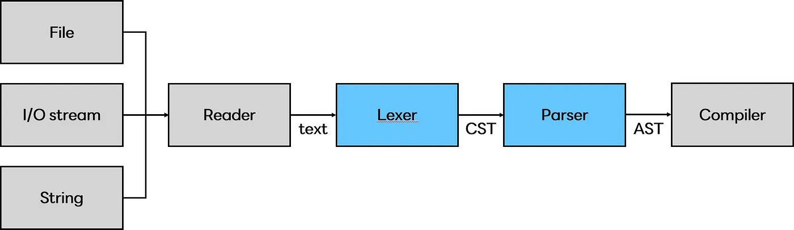
*출처: https://medium.com/@codeinseoul/python-lexer-and-parser-d0dbe676a6e#
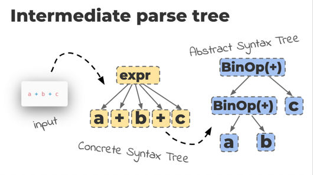
CST : 토큰과 심벌에 대한 문맥(context)이 없는 트리 집합
AST : 파이썬 문법과 문장들에 대한 문맥(context)이 있는 트리 집합
잠깐! 책에서 ‘렉서’와 ‘파서+토크나이저’ 두 용어를 혼용하고 있습니다. 이를테면 CST를 생성하는 건 렉서 혹은 파서+토크나이저라고 하는 식입니다. 그렇다면 두 용어는 동일한 뜻을 가진 단어일까요?
🤔 파서+토크나이저 = 렉서?#
세 용어 모두 "컴파일러 이론 용어"입니다.
•Tokenizer: 구문에서 의미있는 요소들을 토큰으로 쪼갬
•Lexer: 토큰의 의미를 분석
•Parser: Lexical analyze 된 후 토큰화된 데이터를 CST라는 구조로 표현
*Lexical analyze?
•Tokenizer를 거치며 의미있는 단위로 쪼개지고, Lexer를 거치며 그 결과의 의미를 분석하는 과정
ex) return 명령어 분석
- return 이라는 단어에서 r, e, t, u, r, n 은 각각 따로놓고 보면 아무 의미도 가지지 않음
- Tokenizer 를 거치며 return 이라는 의미있는 단어가 됨 -> 토큰화
- Lexer 를 거치며 이 토큰은 무언가를 반환하라는 명령어구나! 라고 의미를 분석함
- 해당 토큰은 {type: 명령어, value: "return", child: []} 와 같은 식으로 의미가 분석되어 Parser 에게 전달됨
[References] 👉🏻용어 정의, 사진 👉🏻return 명령어 예시
결론: 원칙적으로 파서+토크나이저가 곧 렉서는 아닙니다. 다만 렉서, 즉 토큰의 의미를 분석하는 기능의 구현은 언어마다 다르며, CPython의 렉서는 파서와 토크나이저를 합친 형태로 되어 있다고 이해하면 될 것 같습니다.
6.1 CST 생성#
파스 트리라고도 부르는 CST 는 작성한 코드를 루트와 순서가 있는 트리로 변환한 결과물입니다. 다음은 a + 1라는 산술식이 CST로 표현된 모습입니다.
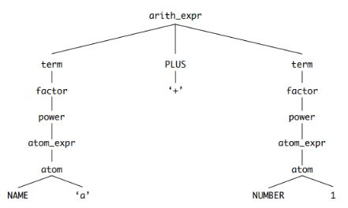
파서는 입력 스트림으로 들어오는 토큰들이 파이썬 문법에 맞는 토큰인지 검증하는 동시에 CST를 생성합니다. 검증에는 Grammar 폴더 내 Grammar 파일에 정의돼있는 심볼들을 사용하며, 심볼은 CST 를 구성하는 노드가 됩니다.
아래 사진을 통해 Grammar 파일에 정의된 arith_expr, term, factor, power 등의 심볼이 CST 노드에 대응한다는 사실을 확인할 수 있습니다.
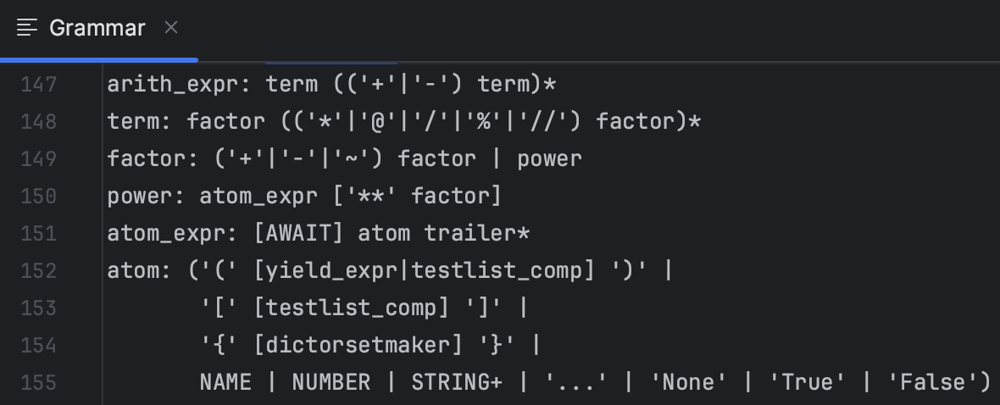
또한 <4. 파이썬 언어와 문법>(p.48)에서 나왔던 것처럼, 토큰은 Grammar 폴더의 Tokens 에서 정의하고 있습니다. 이번 시간에는 NAME과 NUMBER 토큰을 예시로 들겠습니다.
NAME 토큰은 변수나 함수, 클래스 모듈의 이름을 표현합니다.
NUMBER 토큰은 다양한 숫자 형식 값을 표현합니다. 이를테면 ‘0b10000’로 표현된 숫자를 이진수라고 이해하는데 쓰일 수 있습니다.
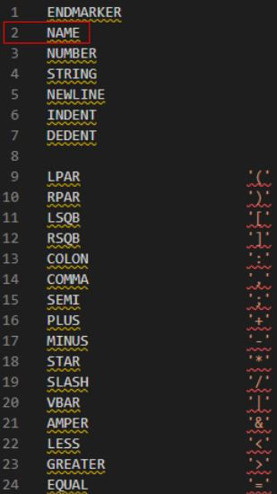
이 때 python의 symbol과 token 모듈로 컴파일된 심벌과 토큰을 확인할 수 있습니다.
6.2 파서-토크나이저#
6.2.1 연관된 소스 파일 목록#
파일 |
설명 |
|---|---|
Python/pythonrun.c |
파서와 컴파일러 실행 |
Parser/parsetok.c |
파서와 토크나이저 구현 |
Parser/tokenizer.c |
토크나이저 구현 |
Parser/tokenizer.h |
토큰 상태 등의 데이터 모델을 정의하는 토크나이저 구현 헤더 파일 |
Include/token.h |
Tools▶︎scripts▶︎generate_token.py에 의해 생성되는 토큰 정의 |
Include/node.h |
토크나이저를 위한 CST 노드 인터페이스와 매크로 |
6.2.2. 파일 데이터를 파서에 입력하기#
파서-토크나이저는 PyParser_ASTFromFileObject() 를 통해 파서의 진입점을 찾을 수 있습니다. PyParser_ASTFromFileObject() 은 다음 두 단계를 거쳐 CST -> AST 파싱을 진행합니다.
PyParser_ParseFileObject() 를 통해 CST 로 변환
PyAST_FromNodeObject() 를 사용해 CST 를 AST 로 변환
PyParser_ParseFileObject() 함수는 2가지 중요한 작업을 수행합니다.
PyTokenizer_FromFile()을 사용해 토크나이저 상태 tok_state를 초기화
parsetok()를 사용해 토큰들을 CST(노드 리스트)로 변환 (Parser/parsetok.c L456:463)
done:
PyTokenizer_Free(tok);
if (n != NULL) {
_PyNode_FinalizeEndPos(n);
}
return n;
}
...
6.2.3 파서-토크나이저 흐름#
기본적으로 커서가 텍스트 입력 끝에 도달하거나 문법 오류가 발견될 때까지 파서와 토크나이저를 실행합니다 (Parser/parsetok.c L242:253).
#endif
for (;;) {
const char *a, *b;
int type;
size_t len;
char *str;
col_offset = -1;
int lineno;
const char *line_start;
type = PyTokenizer_Get(tok, &a, &b);
...
본격적인 파서-토크나이저 실행 전, 토크나이저에서 사용하는 모든 상태를 저장하는 임시 데이터 구조인 tok_state를 초기화합니다 (Parser/parsetok.c L165:189).
node *
PyParser_ParseFileObject(FILE *fp, PyObject *filename,
const char *enc, grammar *g, int start,
const char *ps1, const char *ps2,
perrdetail *err_ret, int *flags)
{
struct tok_state *tok;
...
if ((tok = PyTokenizer_FromFile(fp, enc, ps1, ps2)) == NULL) {
err_ret->error = E_NOMEM;
return NULL;
}
if (*flags & PyPARSE_TYPE_COMMENTS) {
tok->type_comments = 1;
}
Py_INCREF(err_ret->filename);
tok->filename = err_ret->filename;
return parsetok(tok, g, start, err_ret, flags);
코드에서 볼 수 있듯, tok_state는 커서의 현재 위치와 같은 정보를 저장합니다.
tok_get()으로 다음 토큰을 얻고, 해당 토큰의 고유 ID를 파서로 전달합니다 (Parser/tokenizer.c L1171:1185).
/* Get next token, after space stripping etc. */
static int
tok_get(struct tok_state *tok, const char **p_start, const char **p_end)
{
int c;
int blankline, nonascii;
*p_start = *p_end = NULL;
nextline:
tok->start = NULL;
blankline = 0;
/* Get indentation level */
if (tok->atbol) {
...
return PyToken_OneChar(c);
}
파서는 파서 생성기 오토마타(DFA)로 CST에 노드를 추가합니다 (Parser/parser.c L232:316).
PyParser_AddToken(parser_state *ps, int type, char *str,
int lineno, int col_offset,
int end_lineno, int end_col_offset,
int *expected_ret)
{
...
const dfa *d1 = PyGrammar_FindDFA(ps->p_grammar, nt);
if ((err = push(&ps->p_stack, nt, d1,
arrow, lineno, col_offset,
end_lineno, end_col_offset)) > 0) {
D(printf(" MemError: push\n"));
return err;
}
D(printf(" Push '%s'\n", d1->d_name));
continue;
...
return E_OK;
}
전 과정을 도식화하면 아래와 같습니다.
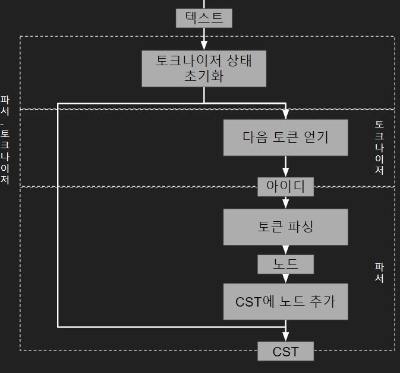
6.3 추상 구문 트리#
추상 구문 트리 단계는 CST를 실행 가능한 형태이면서 좀더 논리적인 구조로 변환하는 단계입니다. CST는 코드 파일의 텍스트를 있는 그대로 표현한 구조로, 텍스트로부터 토큰을 추출하여 토큰 종류만 구분해 둔 상태에 불과합니다. 때문에 기본적인 문법 구조는 알 수 있지만 함수, 스코프, 루프 등 상세 정보는 파악이 불가능합니다.
따라서 코드를 컴파일하기 전에 파이썬 언어 구조와 의미 요소를 표현하는 AST 로 변환해야 합니다.
AST는 CPython 파싱 과정 중 생성하지만 표준 라이브러리의 ast 모듈을 사용해 생성할 수도 있습니다.
AST의 상세 구현을 보기 전에 파이썬 코드의 기본 요소들이 AST로 어떻게 표현되는지 알아봅시다.
6.3.1 AST 관련 소스 파일 목록#
파일 |
용도 |
|---|---|
Include▶︎python-ast.h |
Parser▶︎asdl_c.py로 생성한 AST 노드 타입 선언 |
Parser▶︎Python.asdl |
도메인 특화 언어인 ASDL(Abstract Syntax Description Language)5로 작성된 AST 노드 타입들과 프로퍼티 목록 |
Python▶︎ast.c |
AST 구현 |
python-ast.h 파일은 Parser▶︎Python.asdl 에서 재생성되며, python ast 모듈이 문법을 재생성할 때 불러와 사용합니다. 때문에 Include▶︎python-ast.h의 파라미터와 이름은 Parser▶︎Python.asdl의 정의를 따릅니다. 그 후 AST 의 진입점인 PyAST_FromNodeObject( ) 는 TYPE(n) 에 대한 switch 문을 실행하고, 결과로 심벌 또는 토큰을 반환합니다.
6.3.2 인스타비즈로 AST 시각화하기#
인스타비즈는 AST와 CPython code objects를 웹 인터페이스에서 빠르게 시각화해서 볼 수 있는 파이썬 패키지입니다.
pip로 인스타비즈를 설치할 수 있습니다.
pip install instaviz
instaviz.show() 함수는 code object 타입의 인자 한개를 받습니다. code object에 대해서는 다음 장(7장 컴파일러)에서 알아볼 것입니다.
일단 간단한 함수를 하나 정의하고 함수 이름을 인자로 넘겨보겠습니다.
$ python
>>> import instaviz
>>> def foo():
a = 1
b = a + 1
return b
>>> instavize.show(foo)
# 내부적인 구현은 foo.__code__를 통해 컴파일된 함수 바디의 code object가 입력으로 들어갑니다.
명령줄에서 웹서버가 포트 8080에서 시작되었다는 출력을 볼 수 있습니다.
해당 포트를 사용 중이라면 instaviz.show(foo, port=9090)처럼 비어 있는 포트 번호를 직접 지정하고 실행하면 됩니다.
웹 브라우저에서 함수에 대한 자세한 분석을 확인할 수 있습니다.
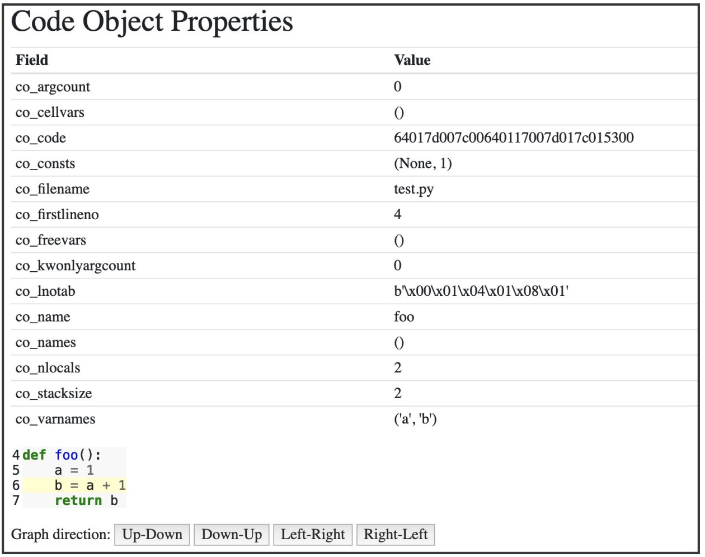
다음 그래프는 REPL에서 선언한 함수를 AST로 표현한 모습입니다.
트리의 각 노드 타입은 AST 노드 클래스입니다. ast 모듈에서 찾을 수 있는 노드 클래스들은 모두 _ast.AST를 상속합니다. CST와 달리 AST의 노드들은 특정 프로퍼티들을 통해 자식노드와 연결됩니다. b = a + 1이 선언된 줄과 연결된 Assign 노드를 클릭해보세요!
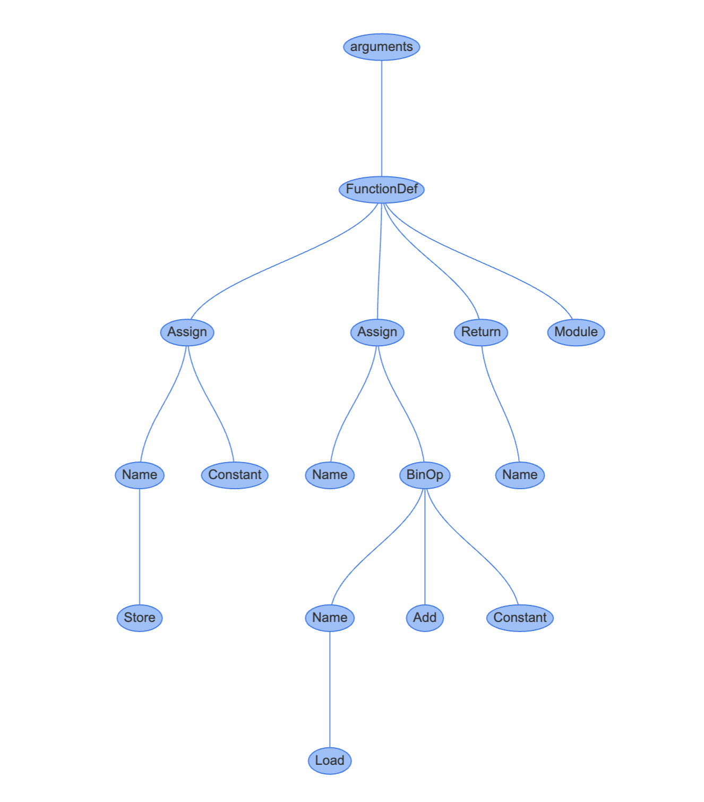
Assign 노드는 두 개의 프로퍼티를 가집니다.
targets는 값이 할당될 이름의 list입니다.a, b = 1, 2 처럼 언패킹을 통해 한 번에 여러 이름에 값을 할당하기 위해 array를 사용합니다.
value는 이름에 할당할 값입니다. 이 경우에는 BinOp 표현식 a + 1가 할당됩니다.
BinOp 노드는 세 개의 프로퍼티를 가집니다.
left: 왼쪽 항
op: 연산자. 이 경우에는 더하기를 뜻하는 Add 노드(+)
right: 오른쪽 항
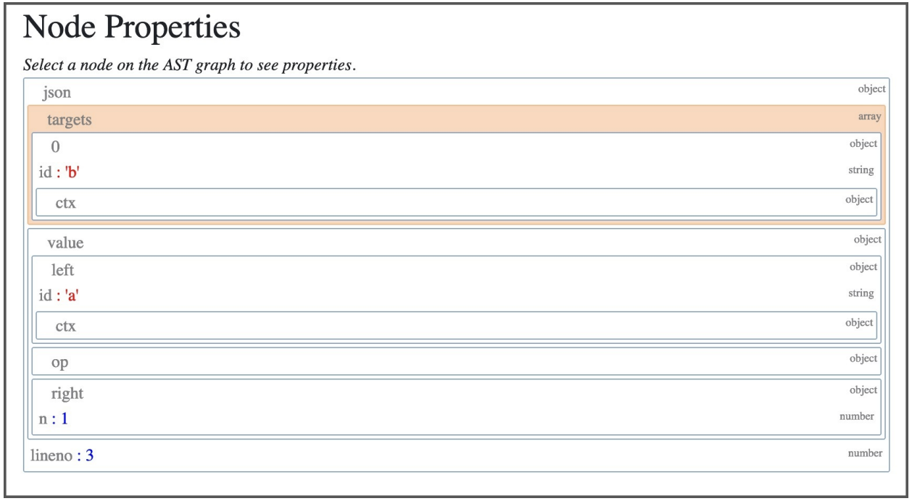
6.3.3 AST 컴파일#
C에서 AST를 컴파일하는 것은 매우 복잡한 작업입니다. Python/ast.c 모듈은 5000줄이 넘는 코드로 이루어져 있습니다..
AST의 공개 API는 CST와 파일 이름, 컴파일러 플래그, 메모리 저장 영역을 인자로 받습니다.
반환 타입은 파이썬 모듈을 표현하는 mod_ty 타입입니다. 해당 타입은 Include/Python-ast.h에서 정의합니다.
Include/Python-ast.h
typedef struct _mod *mod_ty;
struct _mod {
enum _mod_kind kind;
union {
struct {
asdl_seq *body;
asdl_seq *type_ignores;
} **Module**;
struct {
asdl_seq *body;
} **Interactive**;
struct {
expr_ty body;
} **Expression**;
struct {
asdl_seq *argtypes;
expr_ty returns;
} **FunctionType**;
} v;
};
mod_ty는 다음 모듈 타입 중 하나를 담는 컨테이너 구조체입니다.
Module
Interactive
Expression
FunctionType
모듈 타입들은 Parser/Python.asdl (AST 노드 타입들과 프로퍼티 목록) 에서 정의합니다. 해당 파일에서 문장, 표현식, 연산자, 컴프리헨션(comprehension) 타입들도 찾을 수 있습니다.
AST가 생성하는 클래스들과 표준 라이브러리 ast 모듈의 클래스들은 Parser/Python.asdl에서 정의하는 타입입니다.
-- ASDL's 4 builtin types are:
-- identifier, int, string, constant
module Python
{
mod = Module(stmt* body, type_ignore* type_ignores)
| Interactive(stmt* body)
| Expression(expr body)
| FunctionType(expr* argtypes, expr returns)
...
expr = BoolOp(boolop op, expr* values)
| NamedExpr(expr target, expr value)
| BinOp(expr left, operator op, expr right)
ast 모듈은 문법을 다시 생성할 때 Include/Python-ast.h를 import하는데요. 이 파일은 Parser/Python.asdl에서 자동으로 생성됩니다. 이때, Include/Python-ast.h의 파라미터와 이름은 Parser/Python.asdl의 정의를 따릅니다. 또, Include/Python-ast.h의 mod_ty 타입은 Parser/Python.asdl의 Module 정의로부터 생성됩니다.
Python/ast.c는 이 헤더 파일에서 제공하는 구조체들을 사용해 필요한 데이터를 가리키는 포인터를 담은 구조체들을 생성합니다.
AST의 진입점인 PyAST_FromNodeObject()는 TYPE(n)에 대한 switch문을 실행합니다. **TYPE()**은 CST 노드의 타입을 결정하는 매크로입니다.
#define TYPE(n) ((n)->n_type)
결과로는 심벌 또는 토큰 타입을 반환합니다.
mod_ty
PyAST_FromNodeObject(const node *n, PyCompilerFlags *flags,
PyObject *filename, PyArena *arena)
{
switch (TYPE(n)) {
case file_input:
stmts = _Py_asdl_seq_new(num_stmts(n), arena);
...
case eval_input: {
...
루트 노드의 타입은 항상 Module, Interactive, Expression, FunctionType 중 하나입니다.
file_input일 경우에는 Module 타입입니다.REPL 등으로 들어오는
eval_input일 경우에는 Expression 타입입니다.
Python/ast.c에는 각 타입에 대응되는 ast_for_xxx C 함수들이 구현되어 있습니다. 이 함수들은 CST의 노드 중에서 해당 statement에 대한 프로퍼티를 갖습니다.
간단한 예시로 2의 4제곱을 뜻하는 2 ** 4 같은 제곱에 대한 expression을 살펴보겠습니다. ast_for_power()는 연산자가 Pow(제곱), 좌측은 e(2), 우측은f(4)인 BinOp를 반환합니다.
Python/ast.c 2716행
static expr_ty
ast_for_power(struct compiling *c, const node *n)
{
/* power: atom trailer* ('**' factor)*
*/
expr_ty e;
REQ(n, power);
e = ast_for_atom_expr(c, CHILD(n, 0));
if (!e)
return NULL;
if (NCH(n) == 1)
return e;
if (TYPE(CHILD(n, NCH(n) - 1)) == factor) {
expr_ty f = ast_for_expr(c, CHILD(n, NCH(n) - 1));
if (!f)
return NULL;
e = BinOp(e, Pow, f, LINENO(n), n->n_col_offset,
n->n_end_lineno, n->n_end_col_offset, c->c_arena);
}
return e;
}
이번엔 instaviz로 제곱에 대한 AST를 확인해 보겠습니다.
>>> def foo():
2**4
>>> import instaviz
>>> instaviz.show(foo)
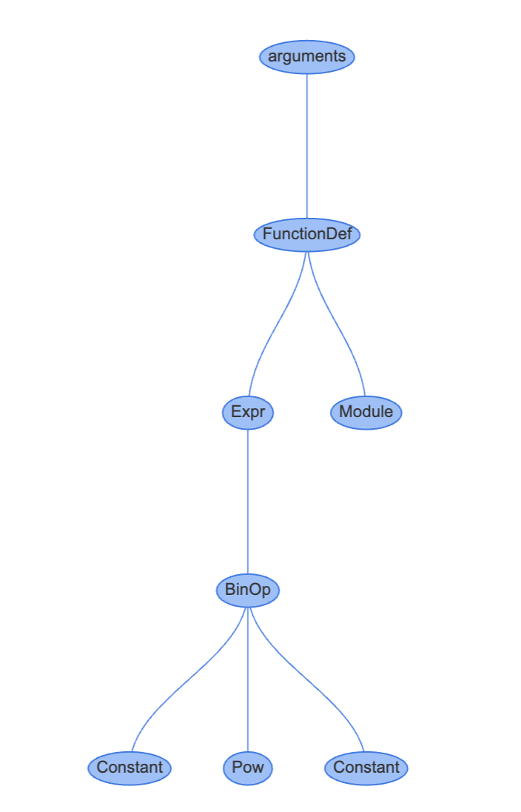
AST의 프로퍼티들도 확인해 봅시다.
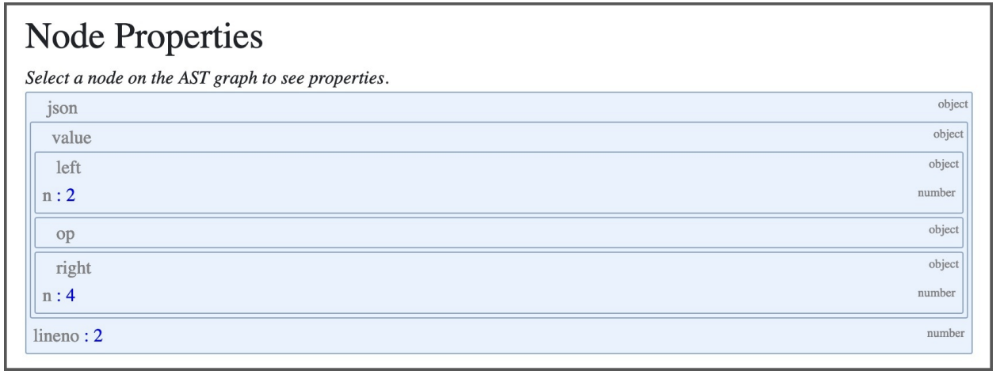
요약하자면 모든 statement type과 expression에는 astfor*() 생성자 함수가 있습니다.(AST 노드로 변환하는 역할을 담당하는 함수) arguments는 Parser/Python.asdl에서 정의하며 표준 라이브러리의 ast 모듈을 통해 외부에 제공됩니다.
statement 과 expression이 자식 노드를 가지고 있으면 dfs를 통해 자식 노드에 대한 astfor*() 함수를 먼저 호출합니다.
6.4 정리#
AST : 파이썬 문법과 문장들에 대한 문맥(context) 있는* 트리 집합.
CST : 토큰과 심벌에 대한 문맥(context)이 없는 트리 집합
토큰 : 심벌의 종류 중 하나.
토큰화 : 텍스트를 토큰들로 변환하는 과정이다.
파싱 : 텍스트를 CST 나 AST 로 변환하는 과정이다.
6.5 ‘거의 같음’ 비교 연산자 추가하기#
파이썬에 새 연산자를 추가해보겠습니다.
파이썬 문법 정의는 Grammar/python.gram에 정의되고 python 토큰은 Grammar/Tokens에 저장되어 있는데요. 모두 pegen이라 불리는 파서 생성기의 input이 됩니다. pegen은 자동적으로 파이썬 렉서와 파서를 이러한 정의로부터 생성합니다.
~= 심벌을 사용하는 ‘거의 같음’ 연산자를 비교 연산자로 새로 추가 해보겠습니다. ‘거의 같음’ 연산자는 다음과 같이 동작합니다.
정수와 정수를 비교할 때는 일반 동등 연산자를 사용.
>>> 1 ~= 1
True
>>> 1 ~= 2
False
정수와 부동 소수점을 비교할 때 부동 소수점은 정수로 변환해 비교.
>>> 1 ~= 1.000000021
True
>>> 1 ~= 1.9
False
새 연산자를 추가하려면 먼저 CPython 문법을 변경해야 합니다. 비교 연산자들은 Grammar/python.gram 파일에 comp_op 심벌로 정의되어 있습니다.
Grammar/python.gram#
(notation이 EBNF 과 PEG 이 섞여 들어있습니다!)
comparison[expr_ty]:
| a=bitwise_or b=compare_op_bitwise_or_pair+ {
_Py_Compare(a, CHECK(_PyPegen_get_cmpops(p, b)), CHECK(_PyPegen_get_exprs(p, b)), EXTRA) }
| bitwise_or
compare_op_bitwise_or_pair[CmpopExprPair*]:
| eq_bitwise_or
| noteq_bitwise_or
| lte_bitwise_or
| lt_bitwise_or
| gte_bitwise_or
| gt_bitwise_or
| notin_bitwise_or
| in_bitwise_or
| isnot_bitwise_or
| is_bitwise_or
| ale_bitwise_or <-- 이곳에 추가
eq_bitwise_or[CmpopExprPair*]: '==' a=bitwise_or { _PyPegen_cmpop_expr_pair(p, Eq, a) }
noteq_bitwise_or[CmpopExprPair*]:
| (tok='!=' { _PyPegen_check_barry_as_flufl(p, tok) ? NULL : tok}) a=bitwise_or {_PyPegen_cmpop_expr_pair(p, NotEq, a) }
lte_bitwise_or[CmpopExprPair*]: '<=' a=bitwise_or { _PyPegen_cmpop_expr_pair(p, LtE, a) }
lt_bitwise_or[CmpopExprPair*]: '<' a=bitwise_or { _PyPegen_cmpop_expr_pair(p, Lt, a) }
gte_bitwise_or[CmpopExprPair*]: '>=' a=bitwise_or { _PyPegen_cmpop_expr_pair(p, GtE, a) }
gt_bitwise_or[CmpopExprPair*]: '>' a=bitwise_or { _PyPegen_cmpop_expr_pair(p, Gt, a) }
notin_bitwise_or[CmpopExprPair*]: 'not' 'in' a=bitwise_or { _PyPegen_cmpop_expr_pair(p, NotIn, a) }
in_bitwise_or[CmpopExprPair*]: 'in' a=bitwise_or { _PyPegen_cmpop_expr_pair(p, In, a) }
isnot_bitwise_or[CmpopExprPair*]: 'is' 'not' a=bitwise_or { _PyPegen_cmpop_expr_pair(p, IsNot, a) }
is_bitwise_or[CmpopExprPair*]: 'is' a=bitwise_or { _PyPegen_cmpop_expr_pair(p, Is, a) }
ale_bitwise_or[CmpopExprPair*]: '~=' a=bitwise_or {_PyPegen_cmpop_expr_pair(p, ALE, a) }
compare_op_bitwise_or_pair 식에 ale_bitwise_or 를 허용하겠습니다.
이제 ‘~=’ 단말 기호를 포함하는 ale_bitwise_or 식을 정의했습니다.
_PyPegen_cmpop_expr_pair(p, ALE, a) 함수 호출은 AST에서 ‘거의 같음’ 연산자를 뜻하는 AlE(Almost Equal) 타입 cmpop 노드를 가져옵니다.
다음으로 Grammar/Tokens에 토큰을 추가하겠습니다.
ATEQUAL '@='
RARROW '->'
ELLIPSIS '...'
COLONEQUAL ':='
ALMOSTEQUAL '~=' # 이곳에 추가
변경한 문법과 토큰을 c 코드에 반영하려면 헤더를 다시 생성해야 합니다.
# mac os / lunux
make regen-token regen-pegen
# window (at root dir)
./PCbuild/build.bat --regen
# makefile이 루트 디렉토리에 없다면 ./configure 후 진행할 것
각각의 타겟은 어떤 작업을 할까?
regen-pegen
regen-pegen:
@$(MKDIR_P) $(srcdir)/Parser/pegen
PYTHONPATH=$(srcdir)/Tools/peg_generator $(PYTHON_FOR_REGEN) -m pegen -q c \
$(srcdir)/Grammar/python.gram \
$(srcdir)/Grammar/Tokens \
-o $(srcdir)/Parser/pegen/parse.new.c
$(UPDATE_FILE) $(srcdir)/Parser/pegen/parse.c $(srcdir)/Parser/pegen/parse.new.c
문법 파일 변경 후 파서를 재생성
Grammar/Tokens, Grammar/python.gram 을
Tools/peg_generator입력으로 줘서Parser/parser.c를 생성합니다. regen-token
regen-token:
# Regenerate Doc/library/token-list.inc from Grammar/Tokens
# using Tools/scripts/generate_token.py
$(PYTHON_FOR_REGEN) $(srcdir)/Tools/scripts/generate_token.py rst \
$(srcdir)/Grammar/Tokens \
$(srcdir)/Doc/library/token-list.inc
# Regenerate Include/token.h from Grammar/Tokens
# using Tools/scripts/generate_token.py
$(PYTHON_FOR_REGEN) $(srcdir)/Tools/scripts/generate_token.py h \
$(srcdir)/Grammar/Tokens \
$(srcdir)/Include/token.h
# Regenerate Parser/token.c from Grammar/Tokens
# using Tools/scripts/generate_token.py
$(PYTHON_FOR_REGEN) $(srcdir)/Tools/scripts/generate_token.py c \
$(srcdir)/Grammar/Tokens \
$(srcdir)/Parser/token.c
# Regenerate Lib/token.py from Grammar/Tokens
# using Tools/scripts/generate_token.py
$(PYTHON_FOR_REGEN) $(srcdir)/Tools/scripts/generate_token.py py \
$(srcdir)/Grammar/Tokens \
$(srcdir)/Lib/token.py
토큰 추가 후 토큰 관련 파일 재생성
(참고) 보통의 PEG 파서들은 파서가 parsing 과 tokenization 을 모두 하지만 Pegen의 경우는 대화형 모드 지원등의 이유로 커스텀 토크나이저를 사용합니다.
헤드를 다시 생성하면 토크나이저도 자동으로 변경됩니다. Parser/token.c 에 PyToken_TwoChars() 함수의 case가 변경된 것을 확인할 수 있습니다.
int
PyToken_TwoChars(int c1, int c2)
{
...
case '~':
switch (c2) {
case '=': return ALMOSTEQUAL; <- 추가됨
}
break;
}
...
}
이제 토크나이저가 새 토큰을 처리할 수 있게 되었습니다. 하지만 아직 AST는 처리하지 못합니다.
현 상태에서 CPython 컴파일을 하려 하면 다음과 같은 메시지와 함께 실패 합니다.
문제발생
CmpopExprPair *
_PyPegen_cmpop_expr_pair(Parser *p, cmpop_ty cmpop, expr_ty expr)
{
assert(expr != NULL);
CmpopExprPair *a = PyArena_Malloc(p->arena, sizeof(CmpopExprPair));
if (!a) {
return NULL;
}
a->cmpop = cmpop;
a->expr = expr;
return a;
}
$ make -j2 -s
Parser/pegen/**parse.c**:9313:51: error: use of undeclared identifier 'AlE'
_res = _PyPegen_cmpop_expr_pair ( p , AlE, a );
이는
make j2 -s커맨드가 타이핑될 때,Parser/parse.c가 컴파일 되는데 이때, ‘AlE’를 인식하지 못해 발생합니다.parse.c는 이전에
make regen-pegen때 업데이트 되었습니다.
또, 아직 Python/ast.c의 **ast_for_comp_op()**는 ALMOSTEQUAL을 올바른 비교 연산자로 인식할 수 없습니다.
Parser/Python.asdl에서 정의하는 Compare 표현식은 좌측 표현식 left, 연산자 목록인 ops, 비교할 표현식 목록인 comparators로 이루어져있습니다.
| Compare(expr left, cmpop* ops, expr* comparators)
Compare 정의는 cmpop 열거형을 참조합니다.
cmpop = Eq | NotEq | Lt | LtE | Gt | GtE | Is | IsNot | In | NotIn
이 열거형은 비교 연산자로 사용할 수 있는 AST 리프 노드의 목록입니다. ‘거의 같음’ 연산자를 비교 연산자로 사용하기 위해 AlE를 추가하겠습니다.
cmpop = Eq | NotEq | Lt | LtE | Gt | GtE | Is | IsNot | In | NotIn | AlE
이제 AST를 다시 생성해서 AST 헤더 파일에 변경된 AST를 반영하겠습니다.
make regen-ast
regen-ast
.PHONY=regen-ast
regen-ast:
# Regenerate Include/Python-ast.h and Python/Python-ast.c using Parser/asdl_c.py
$(MKDIR_P) $(srcdir)/Include
$(MKDIR_P) $(srcdir)/Python
$(PYTHON_FOR_REGEN) $(srcdir)/Parser/asdl_c.py \
$(srcdir)/Parser/Python.asdl \
-H $(srcdir)/Include/Python-ast.h.new \
-C $(srcdir)/Python/Python-ast.c.new
$(UPDATE_FILE) $(srcdir)/Include/Python-ast.h $(srcdir)/Include/Python-ast.h.new
$(UPDATE_FILE) $(srcdir)/Python/Python-ast.c $(srcdir)/Python/Python-ast.c.new
Python-ast.h , Python-ast.c 재생성
(참고)
UPDATE_FILE=python3.9 $(srcdir)/Tools/scripts/update_file.py
Include/Python-ast.h에서 비교 연산자를 정의하는 열거형인 _cmpop에 AlE가 추가된 것을 확인할 수 있습니다.
typedef enum _cmpop { Eq=1, NotEq=2, Lt=3, LtE=4, Gt=5, GtE=6, Is=7, IsNot=8,
In=9, NotIn=10, AlE=11 } cmpop_ty;
AST는 ALMOSTEQAUL 토큰이 비교 연산자 AlE라는 것을 아직은 알 수 없습니다. 토큰을 연산자로 인식할 수 있게 AST C 코드를 수정하겠습니다.
Python/ast.c 의 **ast_for_comp_op()**로 이동해서 연산자 토큰에 대한 switch 문을 찾아보겠습니다.
해당 switch문은 _cmpop 열거형 값 중 하나를 반환하는데요. 여기에 ALMOSTEQUAL 토큰일 경우 AlE 비교 연산자를 반환하는 case를 추가합니다.
Python/ast.c#
static cmpop_ty
ast_for_comp_op(struct compiling *c, const node *n)
{
/* comp_op: '<'|'>'|'=='|'>='|'<='|'!='|'in'|'not' 'in'|'is'
|'is' 'not'
*/
REQ(n, comp_op);
if (NCH(n) == 1) {
n = CHILD(n, 0);
switch (TYPE(n)) {
case LESS:
return Lt;
case GREATER:
return Gt;
case ALMOSTEQUAL: // ALMOSTEQUAL 토큰을 인식
return AlE; // AST 노드 AlE를 반환
...
이제 토크나이저와 AST 모두 코드를 파싱할 수 있지만 아직 저희는 연산자에 대한 동작을 구현하지 않았기 때문에 컴파일러는 이 연산자를 실행하는 방법을 모르는 상태입니다.
AST로 나타낸 ‘거의 같음’ 연산자를 확인해 보려면 ast.parse()가 반환한 값에서 첫 번째 연산자를 출력해봅시다.
>>> import ast
>>> m = ast.parse('1 ~= 2')
>>> m.body[0].value.ops[0]
<_ast.AlE object at ~~~>
AST가 코드를 올바르게 파싱했다면 비교 연산자 AlE타입의 객체가 출력될 것입니다.
다음 장에서는 Cpython 컴파일러가 동작하는 방식을 알아보고 ‘거의 같음’ 연산자의 동작을 구현할 예정입니다.